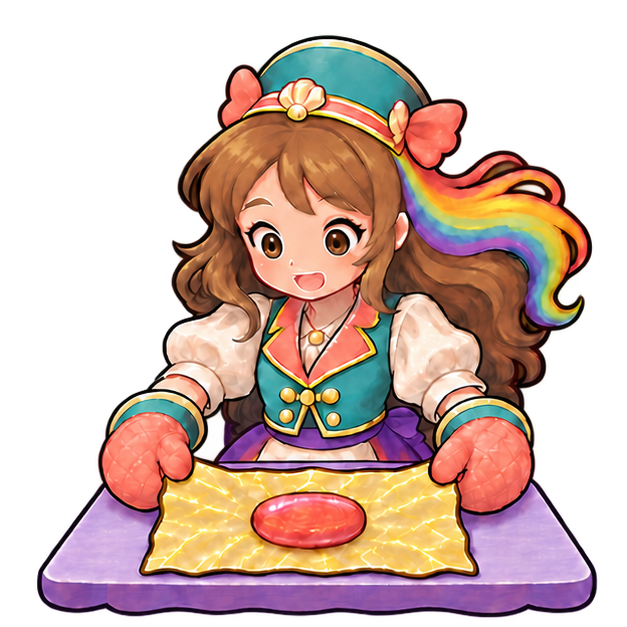
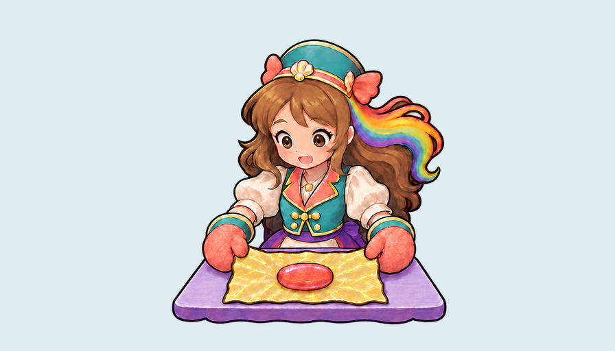

One guarded local ComfyUI reference study: fold the same golden paper, slide both mittens to the narrow necks, counter-twist, then release the same supported sweet. Rendering and every native-frame motion evaluation are pending. Current game wrapping2.8/5 and earlier unbound actual motion4.1/5 remain below4.5.

Complete authored627×627 source cell, independent RGBA pixel equality. No redraw or appearance repair.

Exact source, prompt and installed workflow bindings · Scope and predeclared failure criteria · Exact timeline prompt · Source pixel equality · Previous V23323-file anonymous publication verification
Reference-only; no runtime/cinematic/device/child/owner or full-job acceptance. Rejected sources and all783 current production bytes are preserved.